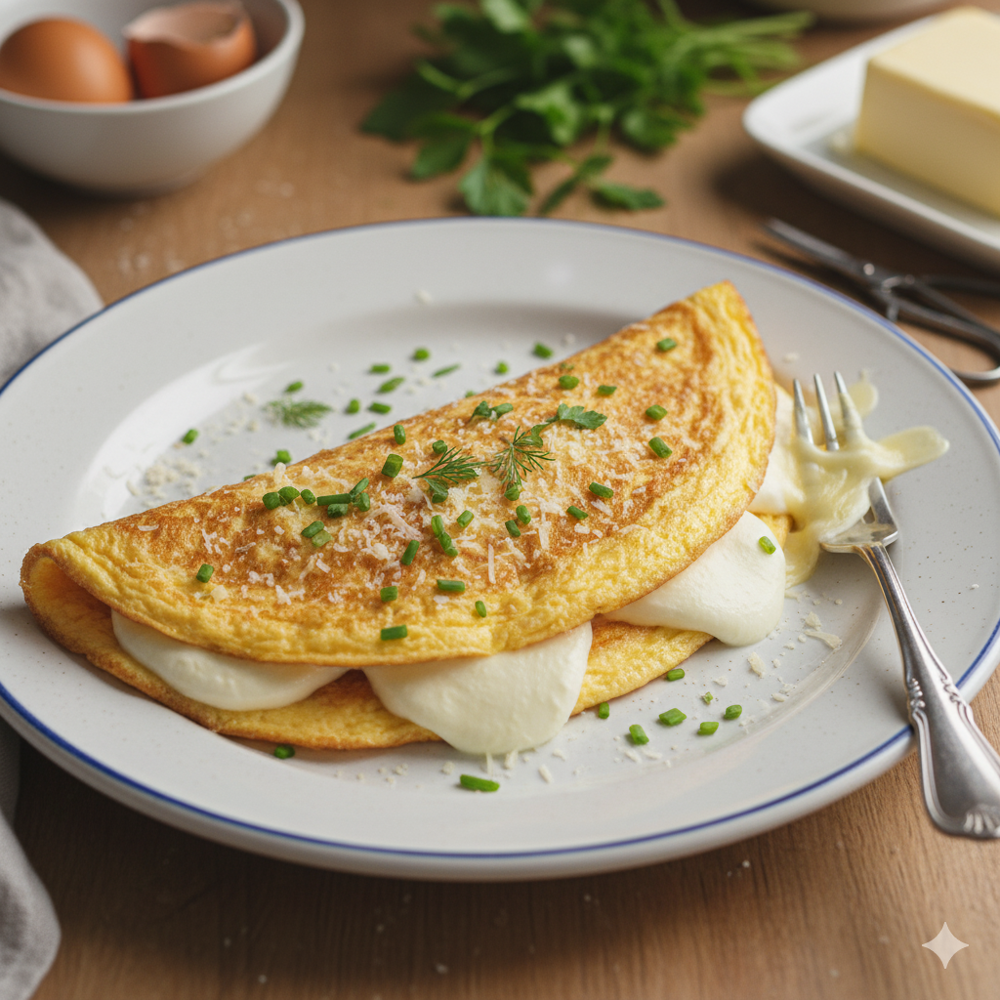
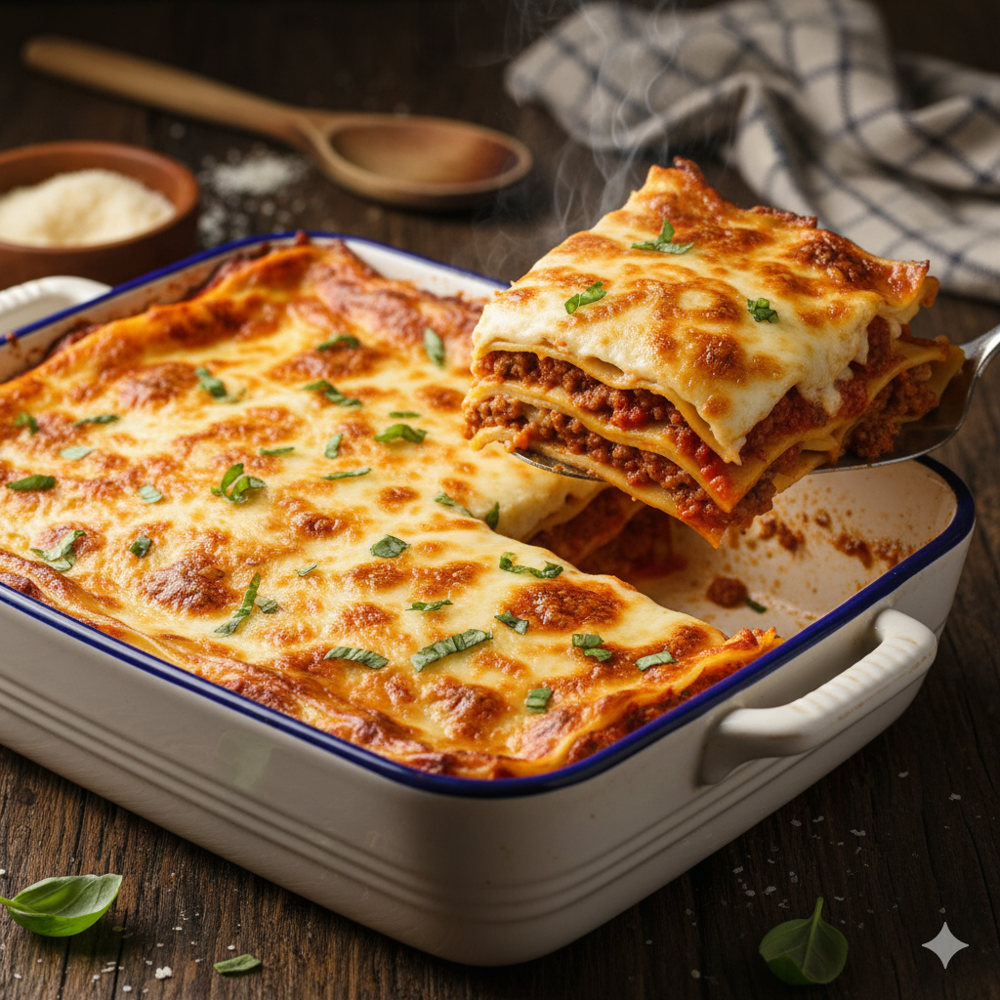

Home
Omelette with Cheese and Fine Herbes
Published in 2025-11-07

Description
The Omelette with Cheese and Fine Herbs is a quick and versatile classic of world cuisine.
Essentially, an omelette is a dish of beaten eggs fried in butter or oil, traditionally folded over a filling. This classica recipe uses Mozzarella or Parmesan cheese and a touch of resh herbs for an aromatic flavor. The goal is to achieve an omelette that is soft and fluffy inside, with a slight golden color outside. It is a complete, nutritious meal and an excellent way to use up leftover vegetables or meats.
Ingredients
-
For 1 Serving
- 3 Large Eggs
- 1 tbsp Milk (or water)
- 1/2 tsp Salt
- 1/4 tsp Black Pepper, freshly ground
-
The Filling and Cooking
- 1/4 cup Shredded Mozzarella Cheese (or other cheese of choice)
- 1 tbsp chopped Fresh Fine Herbs (chives and parsley)
- 1 tsp Butter or Olive Oil (for cooking)
Kitchen Equipment
- Small Bowl (for mixing the eggs)
- Wire Whisk or Fork (to beat the eggs)
- 8-inch (20 cm) Non-stick Skillet
- Spatula
Step-by-Step
- Prepare the Mixture: In a small bowl, beat the eggs with the milk (or water), salt, and pepper until the yolks and whites are fully combined and slightly foamy.
- Add Herbs: Stir half of the fresh fine herbs into the egg mixture.
- Heat Pan: Melt the butter (or heat the olive oil) in the non-stick skillet over medium-low heat, ensuring the fat covers the bottom.
- Pour: Pour the egg mixture into the hot skillet. Let it cook without stirring for 1 to 2 minutes, until the edges start to set.
- Cook Gently: When the edges are firm, reduce the heat to the minimum. Use the spatula to gently push the cooked edge inward, tilting the pan so the liquid egg runs underneath. Repeat until most of the egg is set.
- Add Filling: Sprinkle the shredded cheese over half of the omelette's surface.
- Fold and Finish: Once the center is almost firm, use the spatula to fold the omelette in half. Cook for another 30 seconds.
Serve
- Plate: Carefully slide the omelette onto a serving plate.
- Garnish: Garnish with the remaining fine herbs.
- Enjoy: Serve immediately for the best texture.
See more recipes!
Caesar Salad

Lasagna
